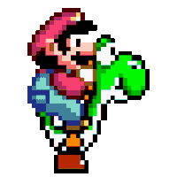

Como Jogar
- Pressione ESPAÇO ou Seta para cima para fazer o Mario pular.
- Desvie dos canos pulando por cima deles.
- A cada cano pulado, você ganha 1 ponto.
- A cada 10 canos pulados, a velocidade dos canos aumenta um pouco.
- O jogo termina se o Mario bater em um cano.
- Para reiniciar, clique em Reiniciar.
